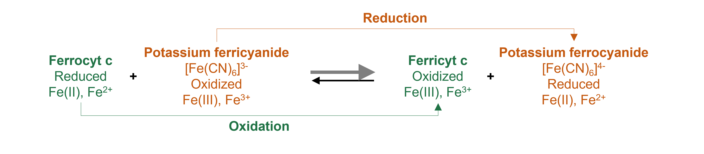
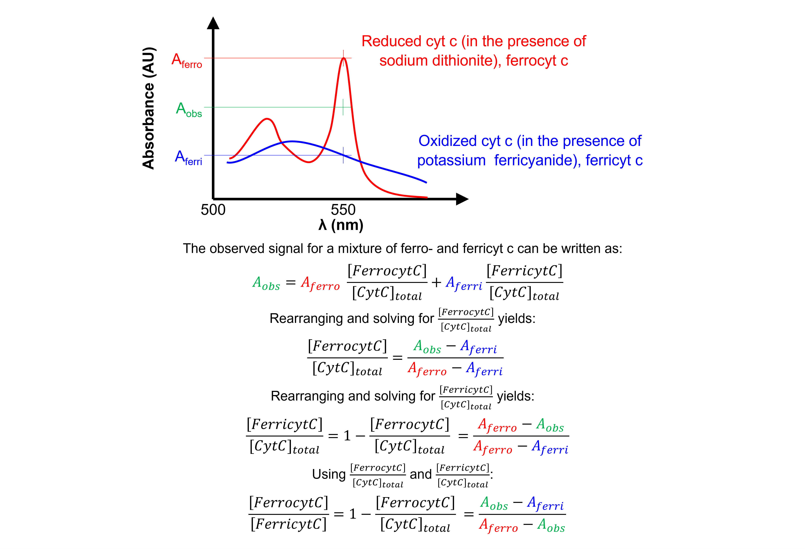
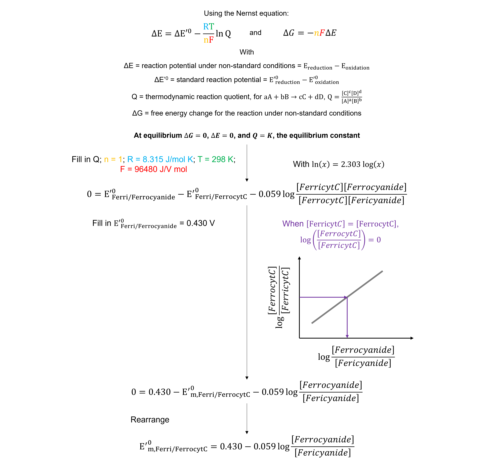
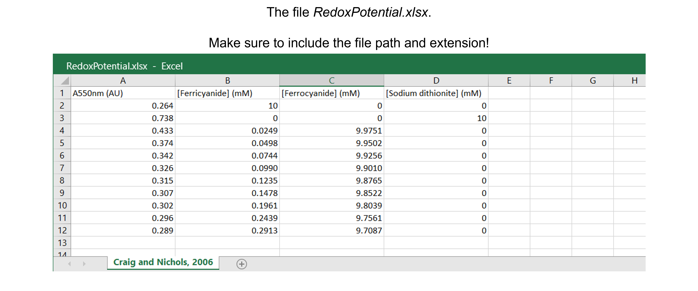

Redox potential#
Introduction#
Midpoint redox potentials for heme proteins, such as cytochrome c (cyt c), can be determined using a standard spectrophotometric procedure, called the “methods of mixtures”. Basically, cyt c is oxidized or reduced with ferri- or ferrocyanide and the absorbance at 550 nm at equilibrium measured as a function of different ratios of ferri- to ferrocyanide.
{kind=link}
Comparing the absorbances at 550 nm to those of fully oxidized and reduced cyt c allows us to obtain the concentration ratio of both forms of cyt c.
{kind=link}
Because we measure the system at equilibrium, the redox potential of the ferricyanide / ferrocyanide halfreaction equals that of the ferrocyt c / ferricyt c half-reaction. The \([ferrocyanide]\)/\([ferricyanide]\) value that corresponds to when the concentrations of oxidized and reduced cyt c are equal can be determined graphically. This value can be used to calculate the midpoint redox potential of cyt c.
{kind=link}
See the article by Douglas B. Craig and Ellert R. Nichols (2006), available here, for more information.
Data#
The spreadsheet “RedoxPotential.xlsx” contains one sheet (see figure below) with absorbances at 550 nm (in AU) and concentrations of ferricyanide, ferrocyanide and sodium dithionite (in mM).
The data are from Table 1 in Craig & Nichols, 2006. There are 11 data points.
{kind=link}
Data analysis#
Exercise 57
Import the libraries needed. Use convenient naming.
Solution to Exercise 57
#Import the libraries
import numpy as np
import matplotlib.pyplot as plt
import pandas as pd
from scipy.optimize import curve_fit
Exercise 58
Read in the data containing AU550nm (AU) and \([Ferricyanide]\), \([Ferrocyanide]\), and \([Sodium dithionite]\) (mM) into a Python pandas DataFrame.
Solution to Exercise 58
Here’s one possible solution.
#Read the Excel file
dfRP = pd.read_excel ('../data/RedoxPotential.xlsx', #create a pandas DataFrame from the filename with file path and extension shown
sheet_name=0, #use the first sheet (no need to specifically include this as we use the default setting)
header=0) #our data has column names
print(dfRP) #print the DataFrame created
Exercise 59
Calculate \(log_{10}\)\(([Ferrocyanide]/[Ferricyanide])\).
Tip: use the numpy.log10 command to calculate \(log_{10}\).
Solution to Exercise 59
Here’s one possible solution.
#Calculate log10([Ferrocyanide]/[Ferricyanide])
dfRP['Log10([FerroCN]/[FerriCN])'] = np.log10((dfRP.iloc[2:,2] / dfRP.iloc[2:,1])) #Calculate log10([Ferrocyanide]/[Ferricyanide]), but not for the first two rows as specified using iloc[start_index_row:(to end row), index_column] = [2:,2] and [2:,1] with column 1 (we start counting from 0!) = [Ferricyanide] and column 2 = [Ferrocyanide]. Store the information in a new column called 'Log10([FerroCN]/[FerriCN])'.
print(dfRP) #print the DataFrame created
Exercise 60
Calculate \(log_{10}\)\(([FerrocytC]/[FerricytC])\) using a function.
Solution to Exercise 60
Here’s one possible solution.
#Calculate log10([FerrocytC]/[FerricytC]) using a function
def funclog10_FerrocytC_FerricytC(Aobs, Aferri, Aferro): #create the function
"""
Calculate log10([FerrocytC]/[FerricytC]) = log10((Aobs - Aferri)/(Aferro - Aobs))
Args:
Aobs in AU = the observed signal for a mixture of ferro- and ferricyt c. The column containing the absorbances at 550 nm (in AU) in the presence of 25 to 300 μM ferricyanide and 9.975 to 9.700 mM ferrocyanide.
Aferri in AU = the observed signal for fully oxidized cyt c, i.e. ferricyt c. The absorbance at 550 nm (in AU) in the presence of 10 mM potassium ferricyanide.
Aferro in AU = the observed signal for fully reduced cyt c, i.e. ferrocyt c. The absorbance at 550 nm (in AU) in the presence of 10 mM sodium dithionite.
Returns:
log10([FerrocytC]/[FerricytC])
"""
log10FerrocytCFerricytC = np.log10((Aobs-Aferri) / (Aferro-Aobs))
return log10FerrocytCFerricytC
dfRP['Log10([FerrocytC]/[FerricytC])'] = dfRP.iloc[2:,0].apply(funclog10_FerrocytC_FerricytC, #Apply the function with arguments Aferri and Aferro (after Aobs) to our data set. Use iloc[start_index_row:(to end row), index_column] = [2:,0] to select Aobs for the data set but not for the first two rows. Store the information in a new column called 'Log10([FerrocytC]/[FerricytC])'.
args=(dfRP.iloc[0,0], dfRP.iloc[1,0])) #Use iloc[index_row,index_column] to select Aferri = [0,0] and Aferro = [1,0] for the data set.
print(dfRP) #print the DataFrame created
Exercise 61
Plot the data: log10([Ferrocyanide]/[Ferricyanide]) versus log10([FerrocytC]/[FerricytC]).
Inspect the data!
Do we discern a clear trend in our data?
Do the data show a positive (sloping upward), negative (sloping downward), or no (spread out) correlation?
Do we notice a linear or a non-linear relationship between x- and y-values?
Do we have outliers?
Where the values entered correctly?
Where there any experimental errors? E.g. a calculation error that we picked up afterwards when looking at our lab notebook?
Are the data points a mistake? E.g. a pipetting error?
In this example, we do not have plenty replicate data points at each value of x so we cannot use statistical tests, e.g. the Grubbs test (see here for more information and an online Grubbs test calculator), on each set of replicates to determine whether a data point is a significant outlier from the rest.
We often only measure a data point once or twice, like in this example. Useful tools in this case are:
studentized residuals, which look at the residuals calculated from the experimental data and model data. See here for more information.
robust techniques which use median, rather than mean, values. See here for more information.
Cook’s distance, which measures the influence of each data point (of note, an influential point is not always an outlier!), thereby determining how much predicted values would change if that point were deleted. See here for more information.
ROUT (Robust regression and OUTlier removal) for non-linear regression. See the article by Motulsky HJ and Brown RE (2006), available here, for more information.
Solution to Exercise 61
Here’s one possible solution.
#Plot the data
plt.figure(figsize=(7,5)) #start a figure object
plt.plot(dfRP.iloc[2:,4], dfRP.iloc[2:,5], #plot a set of x (= Log10([FerroCN]/[FerriCN]), i.e. column 4),y (= Log10([FerrocytC]/[FerricytC]), i.e. column 5) data points, but do not include the first two rows as specified using iloc[start_index_row:(to end row), index_column] = [2:,4] and [2:,5]
marker='o', color='gray', markersize=8, linestyle='None', #use a round, gray marker with size 8; use no line
label='Data') #add a legend label
plt.title('Cytochrome c', fontsize=18) #title of graph
plt.xlabel('$log10([Ferrocyanide]/[Ferricyanide]$)', fontsize=14) #X-axis label
plt.ylabel('$log10([FerrocytC]/[FerricytC])$', fontsize=14) #Y-axis label
plt.axis([1, 3, -1.5, 0]) #axis boundaries, in this case from 1 to 3 for the X-axis and -1.5 to 0 for the Y-axis
plt.legend(loc='lower right') #show legend in lower right corner
plt.show() #show the figure object
We see a trend - a positive correlation, probably a straight line. No data points are spotted as clear outliers.
Exercise 62
Define the line function to fit the data and fit the data. Report the fit parameters and standard errors on the fit parameters.
Solution to Exercise 62
Here’s one possible solution.
#Define a line
def funcline(x, a, b): #create the function
"""
Return a line using slope and intercept
Args:
the slope, a
the intercept, b
Returns:
the line function "a * x + b"
"""
return a * x + b
#Fit the data with a line
paramsCraig, params_covCraig = curve_fit(funcline, #the line function we try to fit to the data
dfRP.iloc[2:,4], #the x values, Log10([FerroCN]/[FerriCN]), but not the first two rows
dfRP.iloc[2:,5], #the y values, Log10([FerrocytC]/[FerricytC]), but not the first two rows
[1, -2]) #the starting parameters for a (=the slope) and b (=the intercept)
#Report the fit parameters with standard errors for the line function
print("Slope, a = ", paramsCraig[0], "±", np.sqrt(np.diag(params_covCraig))[0])
print("Intercept, b = ", paramsCraig[1], "±", np.sqrt(np.diag(params_covCraig))[1])
Exercise 63
Calculate the residuals.
Solution to Exercise 63
Here’s one possible solution.
#Calculate the residuals
resid = dfRP.iloc[2:,5] - funcline(dfRP.iloc[2:,4], *paramsCraig) #calculate the residuals, the star in _*paramsCraig_ unpacks the array so the two optimized parameter values become the second and third arguments (after the x-values) to the function
Exercise 64
Produce a combined figure showing the residuals plot underneath the main plot with data and fitted curve. Make sure they are aligned and have the same X-axis so we can see which residual corresponds to which data point.
Inspect the quality of the fit!
Look at the graph of the experimental data and the fitted curve Do the experimental data and model match?
Look at the graph of the residuals. Are they around 0? Are they random or is there a trend? If the residuals display a systematic pattern, the model fits the data poorly.
Look at the fit parameters and the standard errors on the fit parameters. Are the fit parameters within (biological) reason? Are the standard errors on the fit parameters small? If a standard error on a fit parameter is bigger than the fit parameter, it is possible that there are not enough data points or that the model fits the data poorly.
Look at the goodness of fit statistics. For example, the value of R-square ranges from 0 (worst possible fit) to 1 (best possible fit). However, these fit statistics are not readily available as output of the SciPy curve_fit() function…
Solution to Exercise 64
Here’s one possible solution.
#Generate X-values to calculate the function
xvalues = np.linspace(1, 3, 100) #create an array with 100 evenly distributed elements between 0 (included) and 3 (included)
#Produce a combined graph
fig = plt.figure() #to create a figure object
xlimits = [1, 3] #to make sure we use the same of the X-axis boundaries for both plots
ax1 = fig.add_axes([0.1, 0.53, 1, 0.81]) #to specify the coordinates, width and height of the top plot
ax2 = fig.add_axes([0.1, 0.1, 1, 0.4]) #to specify the coordinates, width and height of the bottom plot
ax1.plot(dfRP.iloc[2:,4], dfRP.iloc[2:,5], #plot a set of x (= Log10([FerroCN]/[FerriCN]), i.e. column 4),y (= Log10([FerrocytC]/[FerricytC]), i.e. column 5) data points, but do not include the first two rows as specified using iloc[start_index_row:(to end row), index_column] = [2:,4] and [2:,5]
marker='o', color='gray', markersize=8, linestyle='None', #use a round, gray marker with size 8; use no line
label='Data') #add a legend label
ax1.plot(xvalues, funcline(xvalues, *paramsCraig), #add the fitted line to plot. Use the generated Log10([FerroCN]/[FerriCN] array as x-values. Use the fitted parameters to calculate the y-values. The star in _*paramsCraig_ unpacks the array so the two optimized parameter values become the second and third arguments (after the x-values) to the function.
color="gray", linestyle='-', #use a gray line
label='Fit') #add a legend label
ax1.axis(xlimits + [-1.5, 0]) #sets the X-axis and Y-axis boundaries for the top plot
ax1.tick_params(axis='x', bottom=False, labelbottom=False) #removes the ticks and tick labels on the X-axis for the top plot
ax1.set_ylabel('$log10([FerrocytC]/[FerricytC])$') #adds Y-axis title for the top plot
ax1.legend(loc='upper left') #include legend
ax2.plot(dfRP.iloc[2:,4], resid, #plot a set of x (= Log10([FerroCN]/[FerriCN]),y (= the residuals for y=ax+b) data points
marker='o', color='gray', linestyle='None', markersize=8) #use gray datapoints size 8 and no line
ax2.axhline(0, color='gray', linestyle="--") #adds a horizontal line at y=0
ax2.axis(xlimits + [-0.1,0.1]) #sets the X-axis and Y-axis boundaries for the bottom plot
ax2.set_xlabel('$log10([Ferrocyanide]/[Ferricyanide]$') #adds X-axis title for the bottom plot, which is the same for the top plot
ax2.set_ylabel('Residuals') #adds Y-axis title for the bottom plot
plt.show() #show the figure object
All in all the fit looks good. There seems to be no trend in the residuals. Hard to say if the fit paramaters are within (biological) reason, this will become clearer after calculating the midpoint redox potential. The standard errors are not bigger than the fit parameters.
Exercise 65
Calculate the midpoint redox potential with
You can use the standard deviations from the fitted parameters to calculate its uncertainty. Use the error propagation tools.
Work with a function.
Solution to Exercise 65
Here’s one possible solution.
#Define the function
def funcmidredpot(a, b, da, db): #create the function
"""
Return the midpoint redox potential with uncertainty
Args:
the slope, a
the standard deviation of the slope, da
the intercept, b
the standard deviation of the intercept, db
Returns:
the midpoint redox potential
the uncertainty of the midpoint redox potential, using error propagation rules
"""
rp = 0.430 - 0.059 * (-b / a)
drp = 0.059 * np.sqrt((a**2 * db**2 + b**2 * da**2)/(a**4))
return rp, drp
#Apply the function
midredpot = funcmidredpot(*paramsCraig, *np.sqrt(np.diag(params_covCraig))) #Use the fitted parameters with standard deviations (the stars unpack both arrays) as arguments for the function.
print("The midpoint redox potential of cytochrome c is", midredpot[0], "+/-", midredpot[1], "V. The uncertainty is one standard deviation and is derived from the errors on the fit.") #Print the result of the experiment.
This value is within (biological) reason.